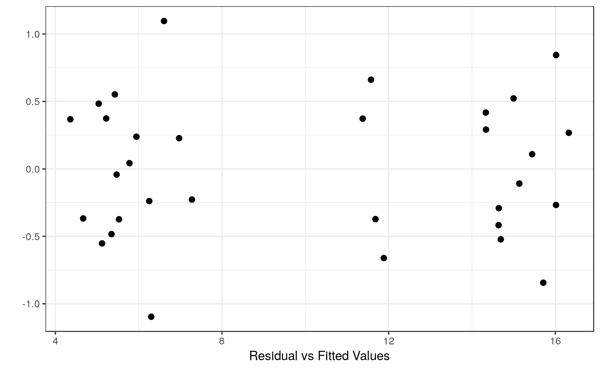

Exam4.4 presents the height means for 4 seedlots under factorial arrangement for two levels of Fertilizer and two levels of Irrigation.
Williams, E. R., Matheson, A. C. and Harwood, C. E. (2023). Experimental Design and Analysis for Tree Improvement. CSIRO Publishing (https://www.publish.csiro.au/book/3145/).
data(DataExam4.4)
library(tidyverse)
library(ggplot2)
library(dae)
# Pg. 58
fm4.6 <-
aov(
formula = Height ~ Rep + Irrig*Ferti*SeedDLot +
Error(Rep/Irrig:Ferti)
, data = DataExam4.4
# , subset
# , weights
# , na.action
, method = "qr"
, model = TRUE
, x = FALSE
, y = FALSE
, qr = TRUE
, singular.ok = TRUE
, contrasts = NULL
)
#> Warning: Error() model is singular
# Pg. 61
summary(fm4.6)
#>
#> Error: Rep
#> Df Sum Sq Mean Sq
#> Rep 1 0.7564 0.7564
#>
#> Error: Rep:Irrig:Ferti
#> Df Sum Sq Mean Sq F value Pr(>F)
#> Irrig 1 0.1 0.1 0.154 0.721
#> Ferti 1 590.6 590.6 841.110 9e-05 ***
#> Irrig:Ferti 1 0.0 0.0 0.010 0.926
#> Residuals 3 2.1 0.7
#> ---
#> Signif. codes: 0 '***' 0.001 '**' 0.01 '*' 0.05 '.' 0.1 ' ' 1
#>
#> Error: Within
#> Df Sum Sq Mean Sq F value Pr(>F)
#> SeedDLot 3 39.65 13.218 19.680 6.3e-05 ***
#> Irrig:SeedDLot 3 1.11 0.370 0.551 0.6572
#> Ferti:SeedDLot 3 9.95 3.317 4.938 0.0185 *
#> Irrig:Ferti:SeedDLot 3 1.74 0.579 0.862 0.4874
#> Residuals 12 8.06 0.672
#> ---
#> Signif. codes: 0 '***' 0.001 '**' 0.01 '*' 0.05 '.' 0.1 ' ' 1
# Pg. 61
model.tables(x = fm4.6, type = "means")
#> Tables of means
#> Grand mean
#>
#> 10.00437
#>
#> Rep
#> Rep
#> 1 2
#> 10.158 9.851
#>
#> Irrig
#> Irrig
#> none plus
#> 9.946 10.062
#>
#> Ferti
#> Ferti
#> none plus
#> 5.708 14.301
#>
#> SeedDLot
#> SeedDLot
#> Bulahdelah Coffs Harbour seed orchard
#> 10.177 11.404
#> Pomona Plantation Atherton
#> 10.149 8.287
#>
#> Irrig:Ferti
#> Ferti
#> Irrig none plus
#> none 5.635 14.257
#> plus 5.781 14.344
#>
#> Irrig:SeedDLot
#> SeedDLot
#> Irrig Bulahdelah Coffs Harbour seed orchard Pomona Plantation Atherton
#> none 10.060 11.647 10.055 8.022
#> plus 10.295 11.160 10.242 8.552
#>
#> Ferti:SeedDLot
#> SeedDLot
#> Ferti Bulahdelah Coffs Harbour seed orchard Pomona Plantation Atherton
#> none 5.688 6.790 5.410 4.945
#> plus 14.667 16.017 14.887 11.630
#>
#> Irrig:Ferti:SeedDLot
#> , , SeedDLot = Bulahdelah
#>
#> Ferti
#> Irrig none plus
#> none 5.275 14.845
#> plus 6.100 14.490
#>
#> , , SeedDLot = Coffs Harbour seed orchard
#>
#> Ferti
#> Irrig none plus
#> none 7.125 16.170
#> plus 6.455 15.865
#>
#> , , SeedDLot = Pomona Plantation
#>
#> Ferti
#> Irrig none plus
#> none 5.625 14.485
#> plus 5.195 15.290
#>
#> , , SeedDLot = Atherton
#>
#> Ferti
#> Irrig none plus
#> none 4.515 11.530
#> plus 5.375 11.730
#>
# Pg. 61
emmeans(
object = fm4.6
, specs = ~ Irrig
, by = NULL
, fac.reduce = function(coefs) apply(coefs, 2, mean)
, contr =
, options = get_emm_option("emmeans")
, weights =
, offset =
, tran =
)
#> Note: re-fitting model with sum-to-zero contrasts
#> Warning: Error() model is singular
#> NOTE: Results may be misleading due to involvement in interactions
#> Irrig emmean SE df asymp.LCL asymp.UCL
#> none 9.95 NaN NaN NaN NaN
#> plus 10.06 NaN NaN NaN NaN
#>
#> Results are averaged over the levels of: Rep, Ferti, SeedDLot
#> Warning: EMMs are biased unless design is perfectly balanced
#> Confidence level used: 0.95
emmip(
object = fm4.6
, formula = ~ Irrig
, type = c("link", "response", "predict.type")[1]
, CIs = c(TRUE, FALSE)[1]
, PIs = c(TRUE, FALSE)[2]
, style =
, engine = get_emm_option("graphics.engine")
, plotit = TRUE
, nesting.order = FALSE
) +
theme_classic()
#> Note: re-fitting model with sum-to-zero contrasts
#> Warning: Error() model is singular
#> NOTE: Results may be misleading due to involvement in interactions
#> Warning: Removed 2 rows containing missing values (`geom_segment()`).
